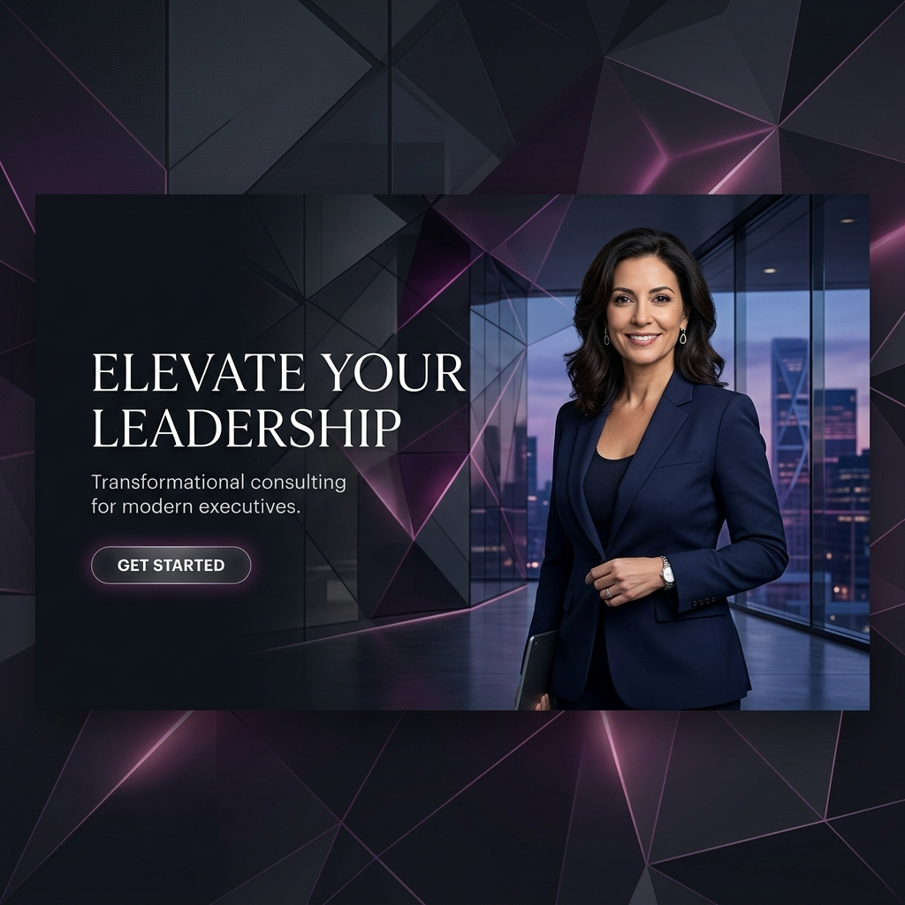

Ayudo a líderes y organizaciones a desbloquear su máximo potencial a través de estrategias de cultura organizacional y desarrollo personal de vanguardia.

Desarrollo de líderes que inspiran, conectan y guían con propósito y empatía en entornos BANI.
Construcción de ecosistemas organizacionales basados en la confianza, la agilidad y el alto desempeño.
Herramientas prácticas para el crecimiento personal que se traducen en mejores resultados colectivos.
Con más de 15 años de experiencia transformando equipos de alto nivel, Mauro Mera combina la psicología organizacional con estrategias de negocio de vanguardia.
Su enfoque no es solo teórico; es profundamente práctico y orientado a resultados que perduran en el tiempo.
Soluciones personalizadas para los desafíos complejos de hoy.
Diagnóstico, diseño y despliegue de valores y comportamientos organizacionales.
Workshops intensivos y coaching ejecutivo para equipos de alto desempeño.
Conferencias inspiracionales sobre el futuro del trabajo y liderazgo humano.
"La intervención de Mauro fue un punto de inflexión para nuestro comité ejecutivo. Logró alinear nuestra visión y humanizar nuestra cultura de una forma que nunca creímos posible."
Hablemos sobre cómo podemos potenciar el liderazgo y la cultura de tu organización.
Agenda una Consultoría